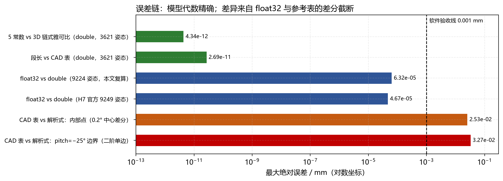
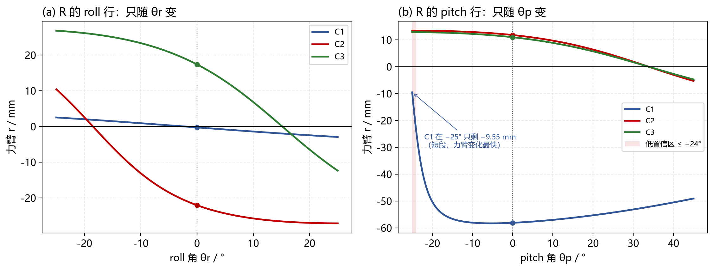
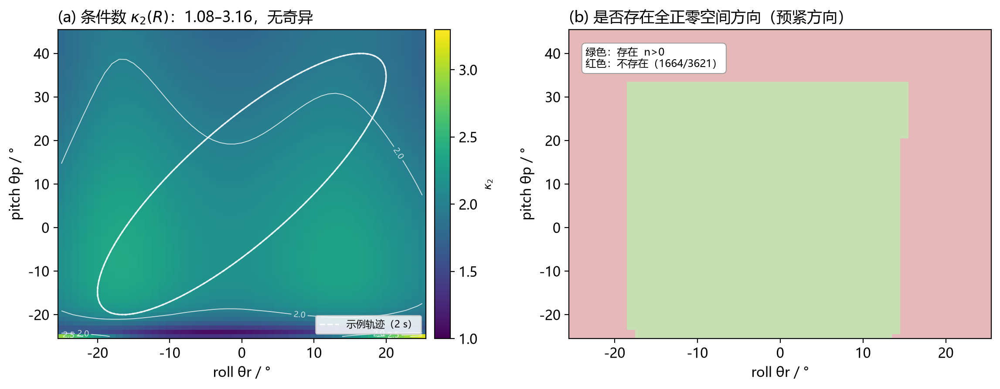

版本 v1.0 · 2026-10-26
对应模型 2026-10-21 fixed-center-polyline v1（C2/C3 的 P03/P04 已修正）
对应实现 H7 包wrist_r.c/wrist_default_model.c，PC 镜像wrist_model.py一句话结论：R 是 2×3、随位姿变化的力臂矩阵；6 个元素由「6 段 × 5 个几何常数」实时算出。当前模型与独立 3D 链式雅可比在 3,621 个姿态上的最大差为 4.3×10⁻¹² mm（double）；float32 最大差 6.3×10⁻⁵ mm；与 0.2° 差分参考表的最大差 0.0327 mm 全部来自参考表的差分截断，不是模型误差。工作空间内 R 满行秩、条件数 1.08–3.16，无奇异；但 1,664/3,621 个姿态不存在全正零空间预紧方向，张力分配必须逐姿态检查盒约束。
“动态”指什么：本文的“动态 R”指 R 随关节角 θr、θp 变化，不是动力学方程里的惯性项。控制周期内它是时变量，但每个周期只需一次解析求值，不需要查表或迭代。
model_parameters.json 的 axis_provenance）。这是当前模型的主要几何不确定度之一。腕部是 3 绳 / 2 自由度的冗余驱动：
| 段 | 两端所在刚体 | 是否随角度变 |
|---|---|---|
| P1–P2、P2–P3、P3–P4 | base | 不变 |
| P4–P5 | base → roll_link | 随 θr 变 |
| P5–P6 | roll_link | 不变 |
| P6–P7 | roll_link → palm | 随 θp 变 |
| P7–P8 | palm | 不变 |
不变 5 段之和记为 $c_i$。C1、C2、C3 的 $c_i$ 分别约为 80.675、61.260、61.260 mm。
以 pitch 段 P6–P7 为例：roll 旋转把 P6、P7 一起旋转，属于刚体变换，长度不变。写成矩阵：
其中 $x(\theta_p)$ 只含 θp。所以 $s_{pi}$ 只由 θp 决定；同理 $s_{ri}$ 只由 θr 决定。这个性质不是二轴腕部的通性，而是当前绳路（没有 base→palm 直连绳）带来的。
常见写法 $J=\partial l/\partial q$ 是 3×2；本文的 R 是 $-J^{\mathrm T}$，是 2×3。两者只差转置和负号，但矩阵乘法的顺序不能写反。
本文的模型坐标（与 CAD 修正数据一致）：
在垂直于 roll 轴的平面里，取右手平面基
注意 $e_2=-Z$，所以 CAD 里的 $z$ 坐标要取负才能填进 $u_2,v_2$。例如 C2/roll 的 P4 是 $(-27,-16,+5)$，对应 $(u_1,u_2)=(-27,-5)$。这一步是符号错误的高发点。
| 符号 | 含义 | 单位 |
|---|---|---|
| $o$ | 轴心（roll 为原点，pitch 为 $(0,0,24)$） | mm |
| $\hat a$ | 轴方向单位向量（roll $+Y$，pitch $+X$） | — |
| $A$ | 固定端（P4 / P6） | mm |
| $B_0$ | 动端零位（P5 / P7） | mm |
| $u,v$ | $A-o$、$B_0-o$ | mm |
| $u_\perp,v_\perp$ | 垂直于轴的分量 | mm |
| $a,b$ | 固定端、动端到轴的距离 | mm |
| $h$ | 两端沿轴的错开量，带符号 | mm |
| $\Delta$ | $u_\perp$ 与 $v_\perp$ 的有向夹角 | rad |
| $s$ | 该段绳长 | mm |
| $r$ | 力臂 $-\mathrm{d}s/\mathrm{d}\theta$ | mm |
| $\alpha,\beta,\gamma$ | 三个打包系数 | mm² |
| $R$ | 2×3 力臂矩阵 | mm（或 m） |
| $f$ | 三根绳张力 | N |
| $\tau$ | 两个关节力矩 | N·mm（或 N·m） |
| $n$ | R 的单位右零空间方向 | — |
| $t$ | 零空间预紧参数 | N |
沿轴分解：
三个不变量：
平面几何：C2/roll 段的 a、b、Δ、s(θ)，以及轴向错位 h 只贡献 h²。
绕轴转 θ：
动端位置 $B(\theta)=o+h_2\hat a+v'_\perp$，所以
轴向与两个垂直分量都正交，平方后轴向单独分离：
在右手平面 $(e_1,e_2)$ 里，$u_\perp=(u_1,u_2)$、$v_\perp=(v_1,v_2)$，定义
于是
这里 $\gamma=+2ab\sin\Delta$。如果 $\Delta$ 的符号或 $e_2$ 的方向取反，$\gamma$ 会反号，最终 $r$ 也反号。先用零位 $r(0)$ 对一遍，是最便宜的符号检查。
| 段 | a / mm | b / mm | h / mm | Δ / ° | α / mm² | β / mm² | γ / mm² | r(0) / mm |
|---|---|---|---|---|---|---|---|---|
| C1 / roll | 5.025 | 18.173 | +3.000 | +2.197 | 364.500 | −182.500 | +7.000 | −0.2594 |
| C2 / roll | 27.459 | 37.149 | +4.000 | +18.488 | 2150.250 | −1935.000 | +647.000 | −22.0497 |
| C3 / roll | 27.459 | 41.594 | +4.000 | −15.150 | 2500.250 | −2205.000 | −597.000 | +17.3720 |
| C1 / pitch | 58.310 | 62.160 | −0.1785 | +25.589 | 7263.474 | −6537.666 | +3130.772 | −58.1046 |
| C2 / pitch | 13.416 | 25.298 | +0.2836 | −33.830 | 820.330 | −564.000 | −378.000 | +11.8049 |
| C3 / pitch | 13.416 | 25.298 | +6.2836 | −33.830 | 859.733 | −564.000 | −378.000 | +10.9904 |
C1/roll 的 $r(0)$ 只有 −0.259 mm，说明零位时 C1 绳段的延长线离 roll 轴只有 0.259 mm；它的力矩贡献很小，但对几何误差最敏感。C1/pitch 的 −58.1 mm 则是 pitch 的主力矩臂。
在 $(e_1,e_2)$ 平面里：
转 30°：
差向量：
力臂：
对应的 3D 点是 $B=(-19.146,-12,31.838)$，其二分量 $-Z=-31.838$，与上面一致。这一步同时验证了“$e_2=-Z$”的符号约定。
C2 / roll 的完整扫描：
| θ / ° | 0 | 10 | 20 | 25 | 30 | 40 |
|---|---|---|---|---|---|---|
| s / mm | 14.671 | 18.894 | 23.521 | 25.884 | 28.249 | 32.922 |
| r / mm | −22.050 | −25.753 | −26.993 | −27.124 | −27.042 | −26.418 |
注意：25° 的 s 是 25.884 mm，但 r(25°) 是 −27.124 mm；−26.993 mm 是 20° 的值。s 和 r 不要跨行抄。
每个关节角只需算一次 sin/cos，然后对三根绳各做一次：
roll 段用 θr，pitch 段用 θp。六个 $(s,r)$ 组合成 R 的两行。
因为 $\mathrm{d}v'/\mathrm{d}\theta=(-v'_2,\,v'_1)$，所以
符号陷阱：写成 $(u_1d_2-u_2d_1)/s$ 会得到相反的符号。它等于 $-r$，在闭环里表现为“控制方向反、越纠越偏”。旧稿的算法段就是这个写法，本文已改正。
单位 mm：
单位 m（固件 SI 口径）时整体乘 $10^{-3}$：
零位右零空间方向：
三根绳全正，说明零位存在“三绳一起收紧”的内部预紧方向。零位条件数 $\kappa_2=2.1498$。
sqrt、6 次除法；约 30 次乘法加法。C 语言形态：
for (j = 0; j < 2; ++j) {
float th = (j == 0) ? roll_rad : pitch_rad;
float c = cosf(th), s = sinf(th);
for (i = 0; i < 3; ++i) {
float v1p = seg[j][i].v1 * c - seg[j][i].v2 * s;
float v2p = seg[j][i].v1 * s + seg[j][i].v2 * c;
float d1 = v1p - seg[j][i].u1;
float d2 = v2p - seg[j][i].u2;
float len = sqrtf(d1*d1 + d2*d2 + seg[j][i].h*seg[j][i].h);
R[j][i] = (d1*v2p - d2*v1p) / len;
seg_len[j][i] = len;
}
}
| 标志 | 含义 | 处理 |
|---|---|---|
math_valid |
六段都有限、段长大于数值下限 | 否则 R 全部置 NaN，不得沿用旧帧 |
angle_in_range |
两个角都在模型行程内 | 越界仍给数学结果，但控制不得使用 |
low_pitch_zone |
pitch ≤ −24° | 提示低置信区；C1 pitch 在 −25° 只有 3.9006 mm |
rank_2 |
两行数值独立 | 当前工作空间 3,621/3,621 为真 |
has_positive_internal_preload |
存在全正 n | 当前工作空间 1,957/3,621 为真 |
condition_2 |
$\kappa_2(R)$ | 当前工作空间 1.08–3.16 |
| 路线 | 做什么 | 独立性 |
|---|---|---|
| A. 5 常数固件式 | 直接算 $s,r$ | 生产路径 |
| B. 3D 刚体 FK + 链式雅可比 | 24 个 CAD 点，逐段 $u_k$ 投影 | 不调用 A 的平面常数 |
| C. α β γ 闭式 | $\sqrt{\alpha+\beta\cos\theta+\gamma\sin\theta}$ | 代数等价性检查 |
| D. CAD 0.2° 差分表 | 3,621 个 1° 网格姿态 | 外部参考，含差分截断 |
| E. float32 模拟 | 常数、角度、运算全用 float32 | 数值格式检查 |
B 的定义是
其中 $p_k$ 是第 k 个导向点的世界坐标，$u_k$ 是该段单位方向。它和 A 的平面投影是两条不同的计算路径。
| 元素 | A（5 常数） | B（3D 链式） | C（αβγ） | A−B |
|---|---|---|---|---|
| roll / C1 | −0.259437 | −0.259437 | −0.259437 | $<3\times10^{-13}$ |
| roll / C2 | −22.049701 | −22.049701 | −22.049701 | $<3\times10^{-13}$ |
| roll / C3 | +17.371982 | +17.371982 | +17.371982 | $<3\times10^{-13}$ |
| pitch / C1 | −58.104616 | −58.104616 | −58.104616 | $<3\times10^{-13}$ |
| pitch / C2 | +11.804884 | +11.804884 | +11.804884 | $<3\times10^{-13}$ |
| pitch / C3 | +10.990351 | +10.990351 | +10.990351 | $<3\times10^{-13}$ |
最大差 $2.9\times10^{-13}$ mm；αβγ 与 5 常数的系数闭合差 $8.7\times10^{-19}$ m²。
| 指标 | 结果 |
|---|---|
| 姿态数 | 3,621（roll −25…25°，pitch −25…45°，1° 网格） |
| A vs B 最大差 | 4.34×10⁻¹² mm |
| A vs B RMS | 6.24×10⁻¹³ mm |
| 段长 vs CAD 表最大差 | 2.69×10⁻¹¹ mm |
| 满行秩 | 3,621 / 3,621 |
| 条件数范围 | 1.0836 – 3.1637 |
| 全正零空间方向 | 1,957 / 3,621 |
| 无全正零空间方向 | 1,664 / 3,621 |
这说明：5 常数形式不是拟合，而是同一几何的等价改写；double 下它与 3D 链式雅可比只差浮点舍入。
| 指标 | 本文独立复算（9,224 姿态） | H7 官方（9,249 姿态） |
|---|---|---|
| R 最大绝对差 | 6.32×10⁻⁵ mm | 4.67×10⁻⁵ mm |
| R RMS | 2.98×10⁻⁶ mm | — |
| 段长最大差 | 3.30×10⁻⁵ mm | 1.10×10⁻⁵ mm |
| 含角度 float 舍入的最大差 | — | 4.90×10⁻⁵ mm |
两套数字来自不同的姿态集合和编译器，不能逐位比较；结论一致：float32 误差比 0.001 mm 的软件验收线低约一个数量级以上。这是软件数值误差，不含几何、标定、摩擦、弹性误差。
最大差出现在：
这个点正好在 pitch 下边界。参考表的生成方式是：
用 3D 长度直接做二阶单边差分：
得到 −9.583181100 mm，与表值 −9.583181100 mm 相差 8.7×10⁻¹¹ mm。所以表值本身没有错，它只是差分近似；它与解析式的差就是差分截断：
中心差分的步长扫描（同一元素）验证了 $O(h^2)$：
| 步长 h / ° | 0.4 | 0.2 | 0.1 | 0.05 | 0.01 | 0.001 |
|---|---|---|---|---|---|---|
| 与解析式差 / mm | 0.053681 | 0.013502 | 0.003381 | 0.000846 | 3.38×10⁻⁵ | 3.38×10⁻⁷ |
内部点的最大差也有 0.025266 mm，同样来自 0.2° 中心差分在短段附近的截断。
结论：0.0327 mm 是参考表的差分误差，不是 R 模型的误差。在 pitch ≤ −24° 的短段区，不能把这张表当成 0.001 mm 级的真值；要做微米级验收，必须用解析式或更小步长的差分。

误差链：同一批姿态下，模型、float32、CAD 差分表的误差量级。绿：代数/长度；蓝：float32；橙/红：参考表差分截断。
这些必须在实机上单独验证，不能由本文的软件对拍替代。

R 随角度变化：左：roll 行只随 θr 变；右：pitch 行只随 θp 变。低置信区用浅红标出。
| 元素 | 最小 / mm | 最大 / mm | 变化量 / mm |
|---|---|---|---|
| roll / C1 | −2.936 | +2.527 | 5.463 |
| roll / C2 | −27.124 | +10.427 | 37.551 |
| roll / C3 | −12.370 | +26.818 | 39.188 |
| pitch / C1 | −58.307 | −9.551 | 48.756 |
| pitch / C2 | −5.295 | +13.415 | 18.710 |
| pitch / C3 | −4.726 | +12.883 | 17.609 |
最醒目的两个数：
用零位常数代替动态 R，在这两个元素上会产生几十毫米的力臂误差，力矩方向甚至可能反。

工作空间诊断：左：条件数 κ₂(R)；右：是否存在全正零空间方向。白色虚线是 2 s 示例轨迹。
轨迹：$\theta_r=20\sin(2\pi t)$，$\theta_p=10+30\sin(2\pi t+0.6)$，单位度。
| t / s | θr / ° | θp / ° | r(C2, roll) / mm | r(C1, pitch) / mm | κ₂ | n |
|---|---|---|---|---|---|---|
| 0.00 | 0.00 | 26.94 | −22.050 | −53.847 | 1.925 | (0.082, 0.616, 0.783) |
| 0.25 | 20.00 | 34.76 | −26.993 | −51.940 | 1.881 | (−0.006, −0.232, 0.973) |
| 0.50 | 0.00 | −6.94 | −22.050 | −58.282 | 2.169 | (0.283, 0.591, 0.755) |
| 0.75 | −20.00 | −14.76 | +2.559 | −56.761 | 2.305 | (0.202, 0.973, −0.111) |
轨迹内条件数 1.875–2.375；R 的 C2/roll 元素从 −26.99 变到 +2.56，n 的符号也会翻转。这说明：
已知三根绳张力 $f$，关节力矩直接是
内预紧分量（如果 n 存在）是 $f\cdot n$。这个方向永远可算，不依赖张力上下限；wrist_tension.py 里当 n 不存在时把 preload 置 NaN，但 τ 照常算。
当前 v2 控制律（
wrist_control_law.py）是：前馈 $=k_i\,[l_i(\text{目标})-l_i(\text{基线})]$，校正 $=-k_p\,k_i\,(R_i\cdot e_{\text{rad}})$。R 在这里直接决定 P 校正的方向和大小；R 的符号错，闭环会正反馈。
R 是 2×3，$\tau$ 只有 2 维，所以 $f$ 有 1 维自由度。最小范数特解：
右零空间单位向量：
通解：
加上每根绳的上下限 $f_{\min}\le f_i\le f_{\max}$，得到 t 的可行区间：
取示例负载 $\tau=[0.10,\ 0.20]$ N·m，示例张力盒 $[f_{\min},f_{\max}]=[5,40]$ N。这两个阈值不是实机标定值，只用于演示算法；实机必须实测。
| 姿态 (θr, θp) / ° | n | 可行？ | t 区间 / N | 取中点后的 f / N |
|---|---|---|---|---|
| (0, 0) | (0.264, 0.595, 0.759) | ✅ | [31.55, 48.88] | (7.29, 21.71, 33.42) |
| (5, 10) | (0.212, 0.446, 0.870) | ✅ | [40.78, 43.34] | (5.27, 15.98, 38.89) |
| (10, 20) | (0.128, 0.248, 0.960) | ❌ | [69.11, 40.23]，空 | — |
| (15, 30) | (0.032, 0.005, 0.999) | ❌ | [1602.8, 39.9]，空 | — |
| (−20, −20) | (0.229, 0.967, −0.112) | ❌ | n 有负分量 | — |
| (0, 44) | (−0.129, 0.615, 0.778) | ❌ | n 有负分量 | — |
如果区间为空，正确的做法是：降低 $\tau$、改变 $\tau$ 的方向（例如把负载分到另一个关节）、换姿态，或改绳路/滑轮布置；不是简单加大 t。加大 t 只会让先饱和的那根绳过载。
R 是绳长对角度的雅可比，所以也可以拿它做反解。因为 $l$ 对两个角可分离，每个关节是一个“3 个方程、1 个未知数”的最小二乘问题。Gauss-Newton 一步：
目标 $(15^\circ,30^\circ)$，从零位出发：
| 迭代 | θr / ° | θp / ° | 三绳残差范数 / mm |
|---|---|---|---|
| 0 | 0.000 | 0.000 | 30.368 |
| 1 | 12.304 | 27.742 | 2.477 |
| 2 | 15.102 | 30.009 | 0.0484 |
| 3 | 14.999 | 29.998 | 1.85×10⁻³ |
| 4 | 15.000 | 30.000 | 7.04×10⁻⁵ |
| 5 | 15.000 | 30.000 | 2.68×10⁻⁶ |
3 步到 0.002 mm，4 步到 $7\times10^{-5}$ mm，5 步到 $2.7\times10^{-6}$ mm，呈二次收敛。这验证了 R 作为雅可比的正确性，也说明模型在行程内可逆。
实机上做这件事要注意：测得的是绝对绳长，必须先减去 $c_i$ 和零位偏置；并且要用标定后的 $k_i$ 把电机 counts 换成绳长。不要直接把 counts 当 mm。
| 项 | 符号 | 说明 |
|---|---|---|
| 机械零位 | δr, δp | 基线零位对应的模型角；全链只校正一次 |
| 每绳收放系数 | $k_i$ | counts/m，带符号；由台架点动确认 |
| 张力下限 | $f_{\min}$ | 防松绳；必须实测，不能编造 |
| 张力上限 | $f_{\max}$ | 防过载；必须实测 |
| 段长门限 | $s_{\min}$ | 按几何不确定度和允许力臂误差定；不是 1e-8 m 的数值下限 |
math_valid、angle_in_range、low_pitch_zone、rank_2、has_positive_internal_preload。| 错误 | 后果 |
|---|---|
| 用零位 R 常数 | 力臂差几十毫米，力矩方向可能反 |
| 把 pitch 轴心当原点 | a、b、h 全错，pitch 行整体偏 |
| 用 $\Vert v\Vert$ 当 b | 少减了轴向分量 h |
| 角度用度直接喂 sin/cos | 结果完全错 |
| 力臂符号取反 | 闭环正反馈，越纠越偏 |
| 把 CAD 差分表当 0.001 mm 真值 | 在 pitch ≤ −24° 会把 0.03 mm 的差分误差当成模型误差 |
| 只看“n 全正”就认为张力可行 | 分量比例可能让盒约束为空 |
| 用 counts 直接当 mm | 标定系数没乘，量纲错 |
python verify_dynamic_R.py # 独立复算，输出 out/verify_summary.json 与 CSV
python make_figures.py # 生成 out/figs/*.png
H7 官方主机验证：
python tools/verify_host.py # 需 GCC/Clang/Zig cc
| 文件 | 用途 |
|---|---|
复核数据_extracted/复核数据/points_zero.csv |
24 个 CAD 零位点（mm） |
复核数据_extracted/复核数据/model_parameters.json |
轴线、刚体归属、绳段常数 |
复核数据_extracted/复核数据/segment_parameters.csv |
六段 αβγ 与常数长度 |
复核数据_extracted/复核数据/R_grid_corrected.csv |
3,621 姿态的 0.2° 差分参考表 |
H7_.../data/derived_constants.json |
固件 30 个投影常数 + αβγ |
H7_.../src/wrist_r.c |
固件实现 |
code/mmhand-main/wrist_model.py |
PC 镜像 |
code/mmhand-main/wrist_tension.py |
τ=Rf、预紧、松绳/过载判定 |
out/verify_summary.json |
本文全部数值 |
out/figs/fig1…fig4.png |
本文图 |
数据溯源：
952e9c40702d5e140a9f2cd77b88f1416bbfe2941dac7699dba0e74b6d87a59f；32e7111d503728a95ed460259a30bd8fc4c9610dd9039dd6c847736cf63bec09；2026-10-21 fixed-center-polyline v1。| 项 | 旧稿 | 本文 |
|---|---|---|
| 固件力臂公式 | $(u_1d_2-u_2d_1)/s$ | $(d_1v'_2-d_2v'_1)/s$（旧式差一个负号） |
| C1/roll 的 Δ | −17.80° | +2.197° |
| C3/roll 的 Δ | −0.10° | −15.150° |
| C2/roll 25° 的 r | −26.99 mm | −27.124 mm（−26.993 是 20°） |
| sin/cos 次数 | “每段 2 次” | 整帧 2 组（每轴一对） |
| CAD 0.0327 mm | 笼统称“差分截断” | 定位到 pitch=−25° 边界的二阶单边差分，截断值 −0.032668 mm |
飞书_动态R矩阵_验证与解算.md。飞书_动态R矩阵_验证与解算.html，复制渲染后的公式/段落；或在飞书公式块里粘贴对应的 $$...$$ 内容。out/figs/。如果导入时丢失，按图注位置重新插入 fig1_geometry.png、fig2_R_curves.png、fig3_error_chain.png、fig4_workspace.png。| 段 | α / mm² | β / mm² | γ / mm² | c / mm |
|---|---|---|---|---|
| C1 / roll | 364.500 | −182.500 | +7.000 | 80.6755 |
| C2 / roll | 2150.250 | −1935.000 | +647.000 | 61.2596 |
| C3 / roll | 2500.250 | −2205.000 | −597.000 | 61.2596 |
| C1 / pitch | 7263.474 | −6537.666 | +3130.772 | 80.6755 |
| C2 / pitch | 820.330 | −564.000 | −378.000 | 61.2596 |
| C3 / pitch | 859.733 | −564.000 | −378.000 | 61.2596 |
固件不直接存 αβγ：C1/pitch 的 $\alpha+\beta$ 只有约 725.8 mm²，两个 7,000 量级的数相加后只剩约 1/10，float32 会掉精度。固件存 5 个投影数，直接算差向量，避免大数抵消。
| 轴 | 绳 | u₁ | u₂ | v₁ | v₂ | h |
|---|---|---|---|---|---|---|
| roll | C1 | +0.500000 | −5.000000 | +2.500000 | −18.000000 | +3.000000 |
| roll | C2 | −27.000000 | −5.000000 | −32.500000 | −18.000000 | +4.000000 |
| roll | C3 | +27.000000 | −5.000000 | +37.500000 | −18.000000 | +4.000000 |
| pitch | C1 | +6.000000 | −58.000000 | +32.472169 | −53.000000 | −0.178543 |
| pitch | C2 | +6.000000 | +12.000000 | +22.000000 | +12.500000 | +0.283587 |
| pitch | C3 | +6.000000 | +12.000000 | +22.000000 | +12.500000 | +6.283587 |
再次提醒：$u_2,v_2$ 是 $e_2=-Z$ 分量；roll 段的 $u_2=-5$ 对应 CAD 的 $z=+5$。不要直接把 CAD 的 z 填进来。
| 量 | 数值 |
|---|---|
| R(0) / mm | [−0.2594, −22.0497, +17.3720; −58.1046, +11.8049, +10.9904] |
| n(0) | (0.26444, 0.59491, 0.75905) |
| κ₂(0) | 2.1498 |
| 3D 对拍最大差 | 4.34×10⁻¹² mm |
| float32 最大差 | 6.32×10⁻⁵ mm |
| CAD 表最大差 | 0.032668 mm（差分截断） |
| 条件数范围 | 1.0836–3.1637 |
| 全正 n 的姿态 | 1,957 / 3,621 |
| 无全正 n 的姿态 | 1,664 / 3,621 |
| C2/roll 力臂变化 | +10.427 → −27.124 mm |
| C1/pitch 力臂变化 | −9.551 → −58.307 mm |
| 低置信区 | pitch ≤ −24°；−25° 时 C1 pitch 段 3.9006 mm |
文档完。数值由 verify_dynamic_R.py 生成，图由 make_figures.py 生成；所有数值可在 out/verify_summary.json 中复核。